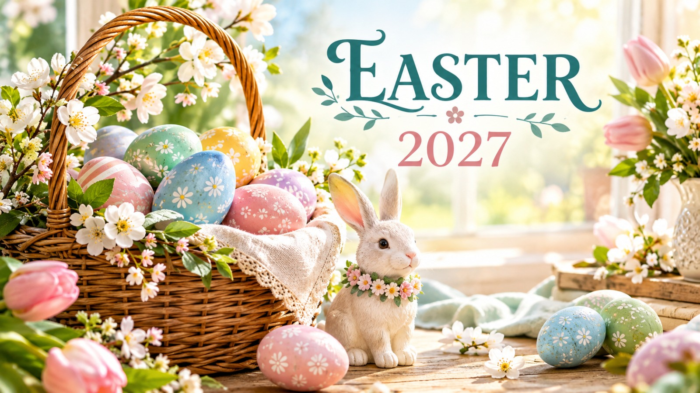

Easter 2027: Date, Wishes, Images & Celebration Ideas
Published October 12, 2026 · Updated October 12, 2026 · By EventBuzz Team

Easter 2027 falls on Sunday, March 28, 2027 — the earliest Easter can possibly be, and a sure sign that spring has arrived. For Christians, Easter celebrates the resurrection of Jesus Christ and is the most important day in the Christian calendar. For everyone else, it has become a joyful spring celebration of painted eggs, chocolate bunnies, family brunches, and egg hunts in the garden. This guide covers the date and meaning of Easter 2027, how to plan a memorable egg hunt, an easy Easter brunch menu, decoration ideas, activities for kids, and wishes and messages to share with the people you love.
The Date & Meaning of Easter 2027
Easter is a movable feast — its date changes every year. The rule, set centuries ago, is that Easter falls on the first Sunday after the first full moon on or after the spring equinox (March 21). In 2027, that calculation lands on the earliest possible date: Sunday, March 28, 2027. The week before includes Palm Sunday (March 21) and Good Friday (March 26), and the Easter season continues for fifty days until Pentecost.
For Christians, Easter celebrates the resurrection of Jesus Christ three days after his crucifixion — the cornerstone event of the faith, marking hope, renewal, and new life. Many churches hold sunrise services on Easter morning, symbolizing the discovery of the empty tomb at dawn. Even in its secular form, Easter keeps that theme of renewal: spring flowers, new life, pastel colors, and the simple joy of a season turning. Understanding the meaning behind the symbols — eggs for new life, the lamb for sacrifice and gentleness, spring flowers for rebirth — makes the celebration richer whatever your tradition.
Planning the Perfect Easter Egg Hunt
The egg hunt is the heart of Easter for kids, and a little planning makes it magical instead of chaotic. Hide eggs in two waves: easy, visible spots for toddlers (on chairs, at the base of plants) and genuinely tricky spots for older kids (inside a shoe, taped under a table, tucked in a mailbox). Color-code by age group if the ages vary — each child hunts only their color, which ends the tears of the five-year-old being outrun by the twelve-year-old.
Fill plastic eggs with a mix of treats: small chocolates, stickers, temporary tattoos, coins, and a few "golden eggs" containing a bigger prize or a coupon for a special outing. Count the eggs before hiding and write down the total — then you know whether the garden is truly clear afterward. For an indoor hunt (useful in late March weather), dim the rooms slightly and give each child a flashlight for a "glow hunt." Set a clear start signal, establish boundaries, and have an adult stationed as the "hint giver" for stuck hunters. The hunt should last fifteen to twenty minutes — long enough to be exciting, short enough to keep the sugar rush manageable.
Easter Brunch Menu Ideas
Easter brunch sits between the morning egg hunt and the afternoon lull, and it should feel festive without demanding a full dinner's effort. Build the menu around a centerpiece main: a glazed ham, a roast lamb, or a spring vegetable quiche all read as "Easter" without much fuss. Around it, arrange make-ahead sides — a spring pea and asparagus salad, scalloped potatoes, deviled eggs (a perfect use for any leftover dyed eggs), and hot cross buns or a braided Easter bread.
Keep breakfast items on the table too: a fruit platter arranged in an egg shape, mini pancakes or waffles with berry compote, and a carrot cake or lemon drizzle cake for dessert. Drinks can be simple — fresh orange juice, a citrus-infused water pitcher, and coffee. The golden rule of Easter brunch: everything should be servable at room temperature or reheatable in one oven batch, because nobody wants to be cooking while the egg hunt is happening.
Easter Decoration Ideas
Easter decor is pastels, spring flowers, and eggs — and it is one of the cheapest holidays to decorate for because so much of it can be handmade or gathered. Dyed eggs are the centerpiece: onion skins give rich browns and golds, red cabbage makes blues, and turmeric makes yellows — natural dyes that look more elegant than neon kits. Display them in a clear glass bowl, a woven basket with straw, or nestled into a spring centerpiece of daffodils, tulips, and pussy willow branches.
For the table, use a pastel runner with a low line of small vases holding single stems — guests can see over it, and it photographs beautifully. Hang paper egg garlands in windows, place a bunny figurine or two on the mantle (thrift stores are full of them), and set a wreath of faux spring blossoms on the front door. With Easter 2027 landing in late March, real spring flowers may already be blooming — a walk to gather branches costs nothing and looks better than anything store-bought.
Kids Activities Beyond the Egg Hunt
Keep the little ones busy between the hunt and brunch with activities that double as keepsakes:
- Egg decorating station: hard-boiled eggs, food coloring, stickers, and glitter glue — the classic that never gets old.
- Bunny ear headbands: paper plates cut into ears, decorated and worn all day.
- Easter bingo: printable cards with eggs, bunnies, chicks, and flowers — keeps a mixed-age group engaged.
- Carrot garden planting: fill small pots with soil and carrot seeds as a take-home gift that teaches patience.
- Story time: read the Easter story or a spring picture book together — a calm reset after the sugar rush.
- Photo booth corner: a pastel backdrop with bunny-ear props for family pictures.
Prep the activity stations the night before so the morning flows: hunt first, activities while brunch is served, photos before everyone changes out of their nice clothes.
Easter Wishes & Messages to Share
Easter messages work for cards, texts, and social posts. Pick the tone that fits the recipient:
- Classic: "Happy Easter! Wishing you a day filled with love, joy, and the hope of new beginnings."
- Faith-based: "He is risen! May the miracle of Easter fill your heart with peace and your home with joy."
- For family: "Happy Easter to the best family — grateful for every spring we get to share together."
- Playful: "Hoppy Easter! Hope your day is egg-stra special and your chocolate supply is endless."
- For friends: "Wishing you sunshine, spring flowers, and all the good things this Easter brings."
- Short and sweet: "Happy Easter! New season, new blessings."
Pair a message with a photo of your decorated eggs or brunch table for a social post, or handwrite one in a card tucked into an Easter basket — handwritten wishes are the ones people keep.
Easter is spring made visible: new life in painted eggs, new light in longer days, and new joy in gathering the people you love around one table.
Frequently Asked Questions
When is Easter 2027?
Easter Sunday 2027 is on March 28, 2027 — the earliest possible Easter date. Palm Sunday is March 21 and Good Friday is March 26, 2027.
Why does the date of Easter change every year?
Easter falls on the first Sunday after the first full moon on or after the spring equinox (March 21). Because the lunar cycle shifts each year, Easter can fall anywhere between March 22 and April 25.
What does Easter celebrate?
For Christians, Easter celebrates the resurrection of Jesus Christ — the most important event in the Christian faith, symbolizing hope and new life. Its symbols (eggs, spring flowers, the lamb) all echo themes of renewal.
How do you plan an Easter egg hunt?
Hide eggs in two difficulty levels for different ages, color-code eggs by child to keep it fair, count eggs before hiding so you know they are all found, fill them with a mix of treats and a few special "golden eggs," and keep the hunt to 15-20 minutes.
What should I serve for Easter brunch?
A centerpiece main (glazed ham, roast lamb, or spring quiche), make-ahead sides like deviled eggs and scalloped potatoes, a fruit platter, hot cross buns or Easter bread, and a carrot cake or lemon cake for dessert. Keep everything servable at room temperature.
What are good Easter wishes to write in a card?
Classic options include "Happy Easter! Wishing you love, joy, and the hope of new beginnings," the faith-based "He is risen!", or the playful "Hoppy Easter! Hope your day is egg-stra special." Match the tone to the recipient.
Conclusion
Easter 2027, arriving on the earliest possible date of March 28, is a spring celebration worth doing well. Understand the meaning, plan the egg hunt with fairness in mind, serve a brunch that practically runs itself, decorate with pastels and real spring flowers, keep the kids busy with crafts, and send wishes that people will remember. However you celebrate, make it about renewal — of the season, and of the people around your table.
More celebration help from EventBuzz:
Happy Easter — may your eggs be many and your chocolate supply endless!